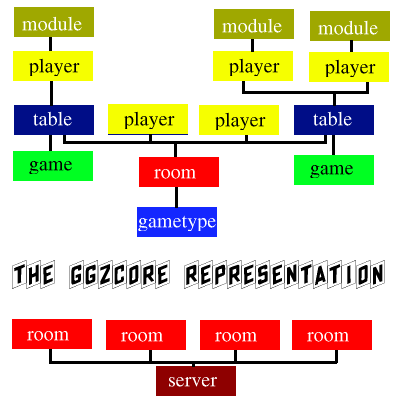
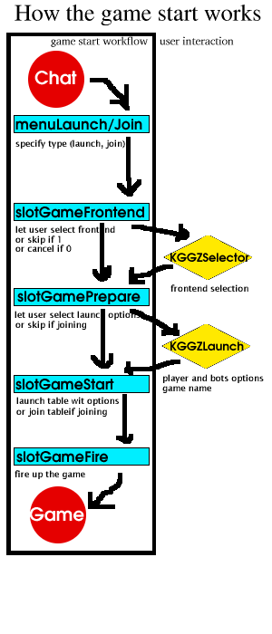

The GGZ Gaming Zone Core Clients
This documentation serves as reference for all people interesting in hacking on the existing CC's, and those who are even keen on writing new ones.
In addition, please look at the ggzcore/ggzcore++ API documentation.
This is how the whole thing is structured. The image shows a typical GGZ server with some people chatting and some playing games. In addition,
there could be players outside of a room, for example joining and leaving players.
Every room is associated with a game type, and every table with a game. Every player has to select a game frontend, which may be done by the CC
if only one frontend exists.

Normally, a player connects to a server, logs in and selects a room for chatting. This procedure is difficult enough and if a CC has implemented it
it's already a large amount of work. However, I'll now concentrate on the second task a CC has: launching games (or joining existing ones if possible).
For that purpose, a number of states has to be passed, all of them linked with user interaction and ggzcore function calls. Here's the "big picture" how things
work (I've taken KGGZ as the example):

Not so advanced applications like GGZap just skip the user interaction, because there are always reasonable defaults. This process is then much easier.
A Core Client is also responsible for managing the connections (user-selectable server list), displaying the users logged in and the running games, as well as
handle errors like game client crash or network lags, which is not so difficult with the ggzcore functions.
OK, that's the magic for now. More details will follow as soon as there is time for it.
Josef Spillner, dr_maux@users.sourceforge.net
The GGZ Gaming Zone, http://ggz.sourceforge.net
2001-06-03